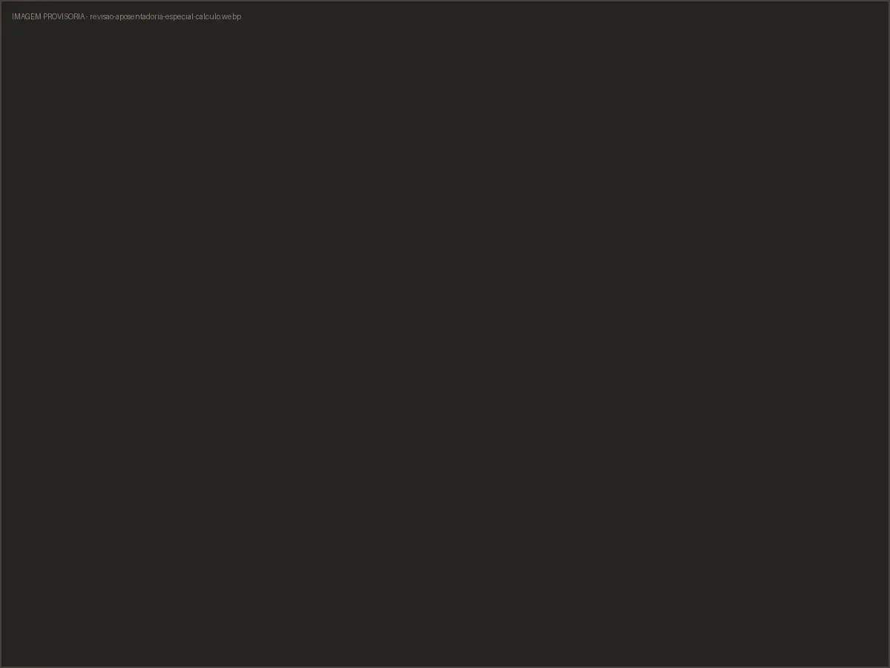

Prazo vencido
Passados 10 anos do primeiro pagamento, a revisão em regra não é mais possível.
Quem pesquisa revisão aposentadoria especial normalmente já recebe um benefício do INSS e desconfia que o tempo especial ficou de fora ou foi mal contado. A revisão pede ao INSS que recalcule o benefício com esse tempo, dentro do prazo de 10 anos previsto em lei. Depois da ADI 6309, alguns casos também merecem uma nova análise. Nem toda revisão aumenta o valor, por isso a conta vem antes do pedido.
Em resumo
É o pedido para o INSS recalcular um benefício já concedido, incluindo tempo especial que não foi considerado ou corrigindo a forma como foi contado. A revisão pode mudar o valor, o tipo do benefício ou os dois.
O que se revisa é a RMI, a renda mensal inicial, e às vezes a própria espécie do benefício. A data de início do benefício, a DIB, define qual lei vale para o cálculo e de quando contam os prazos.
Há dois grupos principais. O primeiro é o de quem se aposentou por outra regra, como tempo de contribuição ou idade, sem que o INSS reconhecesse os períodos especiais. O segundo é o de quem já recebe a aposentadoria especial, mas com algum período faltando ou contado de forma errada.
A revisão pode ser pedida no Meu INSS e, se negada, levada à Justiça Federal. Como o pedido reabre a análise do benefício, é importante ter a prova da exposição pronta antes: em geral, o Perfil Profissiográfico Previdenciário (PPP) de cada empresa.

Pode pedir quem está dentro do prazo de 10 anos e tem prova de que trabalhou exposto a agente nocivo em períodos que o INSS não contou como especiais.
Se você trabalhou exposto a agente nocivo até 13/11/2019, esse tempo pode ser convertido em tempo comum com acréscimo. Exemplo citado com frequência: 5 anos de atividade especial de 25 anos viram 7 anos para o homem e 6 anos para a mulher, pelos fatores tradicionalmente aplicados (1,4 e 1,2). Mais tempo pode melhorar o cálculo do benefício. Simule na calculadora de conversão de tempo especial.
Se na data do pedido você já tinha 15, 20 ou 25 anos de exposição, pode ser possível transformar o benefício em aposentadoria especial [CONFIRMAR com o advogado: em que casos cabe transformar o benefício em aposentadoria especial e qual o efeito no valor]. Nesse caso, é preciso olhar a regra do Tema 709 do STF, que trata de quem continua trabalhando em atividade nociva depois de aposentado.
Se um período especial ficou de fora, ou se salários de contribuição não entraram na conta, a revisão corrige o cálculo. Compare os vínculos da carta de concessão com o CNIS e com os PPPs de cada empresa.
Em 03/06/2026, o STF derrubou as idades mínimas de 55, 58 e 60 anos da aposentadoria especial do INSS. Quem deixou de receber a especial só por causa da idade pode ter algo a rever, mas a decisão ainda pode ser ajustada.
Continuam valendo o tempo de exposição, a proibição de converter tempo especial trabalhado depois de 13/11/2019 e o cálculo criado pela EC 103/2019. Por isso, para quem completou os requisitos depois da Reforma, a especial nem sempre paga mais que o benefício já recebido. Veja as regras em como calcular o valor da aposentadoria especial.
Os embargos de declaração podem definir a partir de quando e para quem a decisão vale. Se o seu pedido foi negado só pela idade, o caminho é outro: veja aposentadoria especial negada: recurso e ação. O andamento está na página da ADI 6309.
O prazo é de 10 anos, chamado de decadência, previsto no art. 103 da Lei 8.213/1991. Passado esse prazo, em regra o benefício não pode mais ser revisto.
Segundo a Lei 8.213/1991, a contagem começa no dia primeiro do mês seguinte ao recebimento da primeira prestação. Exemplo: se o primeiro pagamento caiu em 15/03/2017, o prazo começa em 01/04/2017 e termina em 31/03/2027.
A data do primeiro pagamento aparece no extrato do benefício e na carta de concessão. Se você não tem certeza, peça o histórico de créditos no Meu INSS antes de qualquer outra coisa.
Sim, se o pedido for aceito: o INSS paga a diferença entre o valor recebido e o valor correto. Em regra, só entram as diferenças dos últimos 5 anos antes do pedido de revisão (prescrição, art. 103, parágrafo único, da Lei 8.213/1991).
As diferenças são corrigidas e, na Justiça, recebem juros. Quanto mais cedo o pedido é feito, menos parcelas antigas se perdem. Nenhum advogado pode garantir o valor antes da decisão; o que dá para fazer é estimar a diferença com a carta de concessão e o tempo especial provado.
Faça uma estimativa do tempo especial na calculadora de aposentadoria especial e leve o resultado para a conversa com o advogado.
Vale quando há prova do tempo especial, o prazo não passou e a conta mostra ganho real. A tabela resume os casos mais comuns.
| Situação | Cabe revisão? | Ponto de atenção |
|---|---|---|
| Aposentado por tempo de contribuição com período especial até 13/11/2019 não convertido | Em regra, sim, dentro de 10 anos | Precisa do PPP do período e da conta do ganho |
| Já tinha 25 anos de exposição e recebeu outro benefício | Pode caber transformação em especial [CONFIRMAR com o advogado: requisitos da transformação] | Tema 709: não continuar nem voltar a atividade especial |
| Aposentado especial com período faltando na conta | Sim, para recalcular o valor | Conferir CNIS e salários de contribuição |
| Recebeu outro benefício depois da Reforma por falta de idade | Depende da ADI 6309 e dos embargos | O cálculo da Reforma pode não ser mais vantajoso |
| Benefício concedido há mais de 10 anos | Em regra, não, pela decadência | Exceções só com análise do caso |
| Tempo especial trabalhado depois de 13/11/2019 | Não para conversão em comum | A Reforma proibiu a conversão, e isso não mudou |
Não vale quando o prazo passou, quando não há prova da exposição ou quando o novo cálculo dá um valor igual ou menor. Também pode não valer se você precisar deixar o trabalho atual.
Passados 10 anos do primeiro pagamento, a revisão em regra não é mais possível.
Sem PPP, laudo ou outra prova do período, o pedido tende a ser negado e só gera espera.
Se o novo cálculo dá valor igual ou menor, a revisão não traz vantagem.
Virar aposentado especial pode exigir deixar o trabalho exposto ao risco, segundo o Tema 709 do STF.
O advogado confere o prazo, faz a conta e só pede a revisão se houver ganho e prova. Os prazos do escritório estão em cada etapa.
Você envia a carta de concessão, o CNIS e os PPPs. O advogado confere a decadência primeiro.
Cálculo do valor atual e do valor com o tempo especial. Prazo: [PREENCHER].
Ganho estimado, riscos e honorários por escrito, antes de qualquer pedido.
Revisão no Meu INSS e, se negada, ação na Justiça Federal, com atualização a cada andamento.
Os honorários seguem os critérios de honorários do advogado previdenciário, e o serviço completo está na página do advogado de aposentadoria especial. As regras gerais do benefício estão no guia completo da aposentadoria especial.
Os depoimentos só aparecem com autorização por escrito e sem dados que identifiquem o benefício.
[PREENCHER: depoimento autorizado sobre o atendimento, sem menção a valores ou resultado garantido]
[PREENCHER: depoimento autorizado sobre o atendimento, sem menção a valores ou resultado garantido]
[PREENCHER: depoimento autorizado sobre o atendimento, sem menção a valores ou resultado garantido]
Em regra, 10 anos contados a partir do mês seguinte ao primeiro pagamento, pelo art. 103 da Lei 8.213/1991. Depois disso, o benefício normalmente não pode mais ser revisto.
Pode, se o período foi trabalhado até 13/11/2019 e há prova da exposição. Esse tempo é convertido em tempo comum com acréscimo e pode aumentar o valor. Depois da Reforma, a conversão é proibida.
O pedido serve para buscar um valor maior, mas a reanálise pode levar o INSS a conferir outros pontos do benefício [CONFIRMAR com o advogado: a revisão pode resultar em redução do benefício?]. Por isso a conta e a conferência dos documentos vêm antes do pedido.
Não. Ela derrubou a idade mínima da aposentadoria especial, o que pode interessar a quem deixou de receber a especial só por falta de idade. Os embargos de declaração ainda podem limitar os efeitos, e o cálculo da Reforma continua valendo.
A diferença entre o que recebeu e o valor correto, em regra limitada aos últimos 5 anos antes do pedido, pela prescrição. O valor depende do caso e não pode ser garantido antes da decisão.
Pode trabalhar, mas não em atividade especial, seja a que gerou a aposentadoria ou outra, segundo o STF no Tema 709. Se continuar ou voltar, o pagamento da aposentadoria especial é interrompido. Isso pesa na decisão de transformar outro benefício em especial.
Na maioria dos casos, sim, porque é ele que prova a exposição em cada período. Se a empresa não entrega ou fechou, há outras provas. Envie o que tiver pela página de análise do PPP.
Primeiro no INSS, pelo Meu INSS. Se for negada, é possível recorrer ou entrar com ação na Justiça Federal. O caminho completo está em recurso e ação contra a negativa.
A revisão depende da prova e, às vezes, de recurso. Estes serviços cobrem cada parte.
Confira se o PPP de cada empresa prova o tempo especial que ficou de fora da conta.
Enviar meu PPP para análiseRecurso ao Conselho de Recursos e ação na Justiça Federal, com os prazos de cada etapa.
Ver o caminho do recursoAnálise, cobrança da empresa, provas alternativas e representação no INSS e na Justiça.
Ver o serviço completoEnvie a carta de concessão e o PPP. O advogado confere o prazo e faz a conta antes de qualquer pedido.
![Retrato do advogado Dr. Renato [PREENCHER: sobrenome]](../assets/img/advogado-retrato.webp)
Dr. Renato [PREENCHER: sobrenome]
OAB/GO [PREENCHER] · Advogado previdenciário com atuação em aposentadoria especial e PPP.